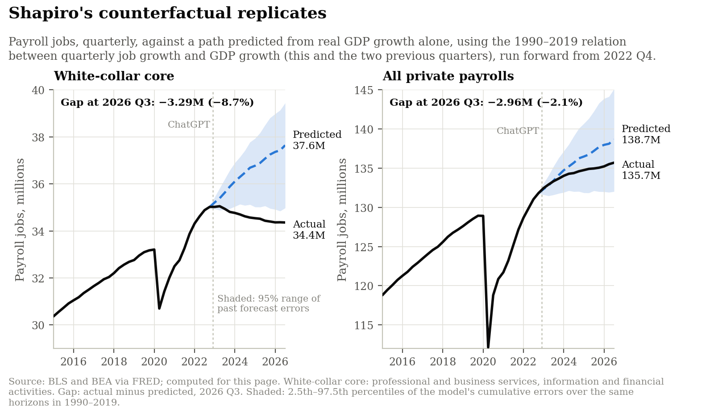
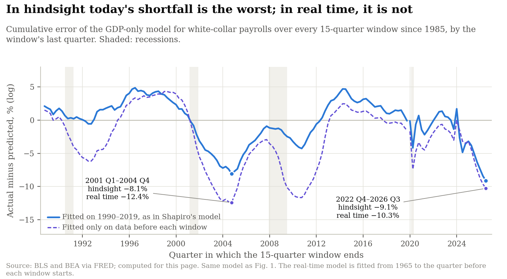
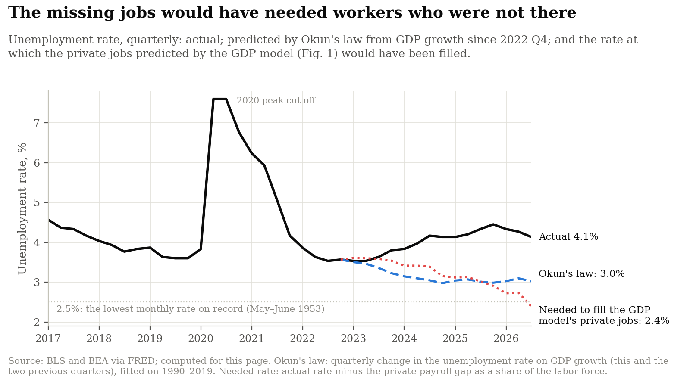
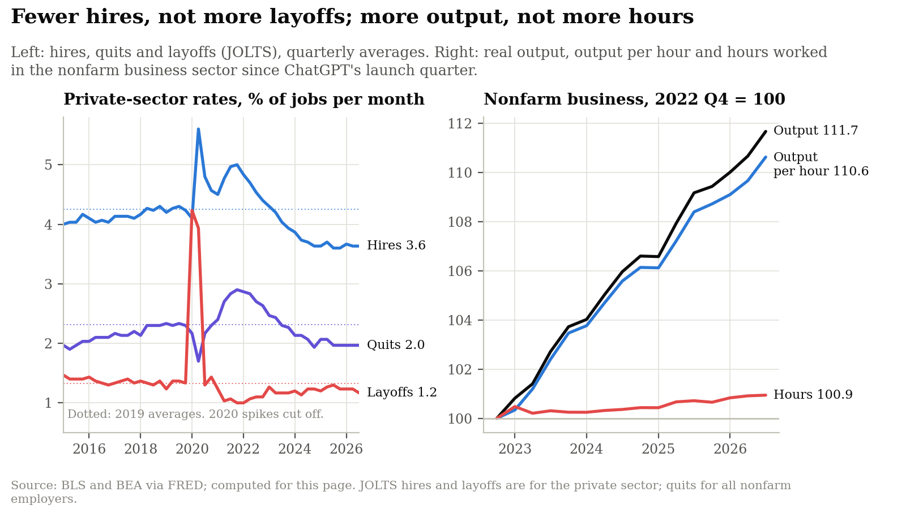

David Shapiro, who popularized the term post-labor economics, recently made his case with five charts and a blunt verdict: "Yeah AI is eating jobs. The economy should have 3M–6M more jobs than it does."
The logic is straightforward. For decades, US job growth tracked GDP growth at a reliable clip. Fit that historical link over 1990–2019, feed it actual GDP growth since ChatGPT launched in late 2022, and the model predicts millions more jobs than the economy has. The shortfall is sharpest in white-collar industries—professional and business services, information, and finance—where payrolls have shrunk while real GDP grew more than 10%. Shapiro calls it the worst white-collar decoupling in 40 years outside a recession, and concludes: "Post-labor is happening ready or not."
That claim deserves a direct test. In Post-Labor Economics or Less-Labor Economics?, I argued from 150 years of data that work fades slowly rather than stopping—and that a genuine break would show up first in hiring and labor's share of income, not in the workweek. In AI Watch, I found US tech output up 35% since 2022 while tech payrolls fell 10%. Shapiro's counterfactual pushes the question further by asking what employment should be, given output. I rebuilt his model from public BLS and BEA data and put it through five stress tests.
The short version
- The decoupling is real—and the core replication holds. White-collar payrolls are 3.3 million (8.7%) below what 1990–2019 GDP growth predicts, having fallen by 663,000 since late 2022 while real GDP grew 10.7%.
- It is the worst in hindsight, not in real time. On Shapiro's 1990–2019 fit, today's 15-quarter white-collar shortfall is indeed slightly deeper than the post-dot-com slump. But a model trained on 1990–2019 grades past crises against an answer key they helped write. Using only data available before each episode, both the dot-com bust and the 2008 financial crisis produced larger white-collar shortfalls than today.
- The "3–6 million missing jobs" across the economy would have needed workers who did not exist. Filling the private-sector jobs predicted by the GDP model would have driven unemployment down to 2.4%—below the all-time low of 2.5% set in 1953. Adjusting for labor supply via Okun's law puts genuine slack at roughly 1.9 million people from all causes combined: high interest rates, tariffs, tax rules, the staffing slump, and AI.
- A third of the white-collar gap is staffing agencies, yet what remains still matters. Temp-help payrolls peaked in March 2022—eight months before ChatGPT—and nearly 40% of temp workers hold factory, warehouse, or transport jobs. Strip out staffing and support services altogether, however, and core office industries (information, finance and insurance, professional services, and management) have been flat for four years: 1.65 million (6.7%) below trend. That residual is the strongest part of Shapiro's case—and the number to watch.
- The timing argues against an accelerating AI wave, but the warning lights are real. The white-collar gap opened fastest in 2023, when fewer than 5% of US firms used AI in production, and has slowed each year since. Even so, Shapiro's sharpest observations stand: hiring is at its lowest rate outside 2008–13, output is growing with almost no extra hours, and labor's share of business income hit another record low in 2026 Q3.
Data through 2026 Q3 for GDP, payrolls, and productivity; October 2026 for unemployment and pay; September 2026 for hiring and layoffs; November 13, 2026 for job postings.
1. The replication: the decoupling is real
How do you estimate jobs that never materialized? Shapiro's model links quarterly payroll growth to real GDP growth over 1990–2019—including GDP in the current quarter and the two quarters before it, because hiring lags output—and then projects that relationship forward from 2022 Q4 using actual GDP.
Rebuilding the model on BLS payrolls and BEA real GDP reproduces both his fit and his headline gaps. The two lags do real work: with them, GDP explains two-thirds of the quarterly variation in payroll growth (\(R^2 = 0.66\) for all private payrolls, matching Shapiro's chart, and \(0.68\) for white-collar jobs); without them, \(R^2\) falls by half. Historically, each 1% of GDP growth has gone with about 1.2% more white-collar jobs, offset by a slow downward drift of 1.3% a year when GDP is flat. With GDP expanding at 2.7% a year since late 2022—slightly faster than the 2.5% pace of 1990–2019—the model expects white-collar payrolls to grow 1.9% a year. Instead, they fell 0.5% a year.

Fig. 1 — Source: BLS and BEA via FRED; computed for this page.
The headline numbers match Shapiro almost to the decimal: a white-collar shortfall of 3.29 million, or 8.7% (his BLS figure is 3.25 million, 8.6%), and a total private-sector gap of 2.96 million, or 2.1% (his 30-year model on ADP's slightly smaller universe gives 2.52 million). Notice the shaded 95% error bands in Fig. 1: total private payrolls sit comfortably inside the model's historical margin of error, whereas white-collar payrolls break cleanly below it.
What about Shapiro's upper headline of 6.3 million missing jobs? That number comes from fitting the model on 2010–19 alone—a decade-long recovery in which hiring outran output because the economy was pulling millions of idle workers back from 10% unemployment down to 3.5%. Over that decade, jobs grew 0.76% for every 1% of GDP, yet quarter by quarter GDP growth explained almost none of the variation in hiring (\(R^2 = 0.09\), against \(0.66\) over 1990–2019). Employers simply added workers at a steady clip while slack remained. Projecting that recovery pace onto an economy that started at 3.6% unemployment is comparing apples with an empty room.
Two quick checks before the deeper stress tests:
- Pandemic overhiring explains only a modest slice of the broad gap. Starting the model in pre-pandemic 2019 Q4 shows broad white-collar payrolls were just 1.9% above their GDP path in late 2022, leaving them 7.2% below it today. (Inside specific industries—especially IT services—overhiring played a much larger role, as we will see.)
- AI capital spending boosted GDP with few ongoing workers. Real investment jumped 34% in equipment and 28% in software and intellectual property since 2022 Q4. By BEA's official contributions, those two lines added 0.8 percentage points a year to GDP growth—about 29% of total growth—while rising from 10.6% to 12.1% of nominal GDP. Removing equipment and IP investment from GDP shrinks the white-collar gap by roughly 13% (from 3.6 million to 3.1 million on a 2008–19 fit). That is AI's footprint, but as capital deepening lifting GDP rather than chatbots replacing staff.
2. History: the worst in hindsight, not in real time
Shapiro tests his model on 2015–19 (where it tracks cleanly) and then compares 2022 Q4–2026 Q3 against every 15-quarter window since 1985. Measuring cumulative shortfalls in log percentage terms—where today's 8.7% level gap reads as −9.1%—he finds today's episode is the worst on record, edging past the post-dot-com trough of −8.1%.
My replication confirms that exact ranking: −9.1% today versus −8.1% in 2001 Q1–2004 Q4. One catch, however, changes the verdict. Those earlier windows lie inside the 1990–2019 training period. Comparing today against 2001 or 2008 with a model trained on 1990–2019 is grading past slumps against an answer key they helped write—making earlier shortfalls look smaller than they appeared at the time.

Fig. 2 — Source: BLS and BEA via FRED; computed for this page.
Even on the hindsight line, the closest precedent—2001 Q1 to 2004 Q4—is just one percentage point smaller, and the economic backdrop is strikingly familiar. Real GDP grew 10.5% across that window and 10.7% across this one. In both cases, a tech investment boom had just cooled and white-collar firms cut staff while output climbed. That was the famous "jobless recovery": a hangover from over-expansion, not the permanent end of white-collar work. Shapiro notes that today's gap occurred without a recession, yet the 2001 downturn was among the mildest on record—and Information-sector payrolls peaked in March 2001 and never regained that high.
The dashed real-time line in Fig. 2 removes hindsight bias by fitting the model using only data available before each 15-quarter window began. Because white-collar jobs per dollar of GDP have drifted downward for decades, a real-time analyst would have seen white-collar payrolls undershoot GDP predictions by 2.7% on average—and by 12.4% after the dot-com bust and 11.7% around the 2008 crisis. Today's real-time shortfall (10.3%) is worse than 88% of past windows, but well short of a record. It is a large, unusual episode, not an unprecedented break with history.
3. Inside the white-collar gap
"White-collar core" is a blunt container. The BLS supersector Professional and Business Services lumps lawyers, engineers, and programmers together with temp agencies, call centers, security guards, and janitorial crews. Fitting the same GDP model to each of its 15 component industries separately—whose actual job changes sum identically to the −663,000 aggregate loss—reveals where the shortfall actually sits.
![Horizontal bars: each white-collar industry's payrolls minus its GDP-only prediction, 2026 Q3, millions, with the actual change since 2022 Q4. Staffing agencies −1.20 (actual −602,000, −15.8%); computer systems design −0.75 (−125,000, −5.0%); other administrative and support −0.38 (+111,000); other professional, scientific and technical −0.37 (+311,000, +3.8%); credit intermediation −0.18 (−142,000); motion pictures and sound recording −0.16 (−120,000, −26.9%); insurance −0.15; real estate −0.12; management of companies −0.11; publishing including software −0.08; telecommunications −0.08; data processing and hosting −0.06; web search −0.05; broadcasting and other information −0.04 (−25,000); other finance −0.01 (+94,000). The actual changes sum to the white-collar total of −663,000.](eating-jobs-inside-the-gap.png)
Fig. 3 — Source: BLS via FRED; computed for this page. Industries are fitted separately, so their gaps sum to 3.7 million rather than the aggregate's 3.3 million.
- Staffing agencies (32% of the gap). Employment services shed 602,000 jobs since late 2022. Temp help alone peaked at 3.16 million in March 2022—eight months before ChatGPT launched—and has fallen 20% to 2.53 million. Firms routinely trim temps first when rates rise and orders cool, and temp work is far from purely office-based: nearly four in ten temp-agency workers (39% in BLS's contingent-worker survey) hold factory, warehouse, or transport jobs. Over the same stretch, manufacturing lost 245,000 jobs. That is the goods economy cooling, not chatbots.
- Tech and IT services (25%). Here is the most plausible place for AI to bite, and a real shortfall does appear. Computer systems design sits 130,000 jobs (5%) below its March 2023 peak and 750,000 below its GDP path. Yet it grew 12% during the 2019–22 cheap-money hiring binge before colliding with higher interest rates and a 2022 tax rule that forced firms to amortize software development over five years (TCJA, reversed for domestic work by the 2025 One Big Beautiful Bill Act). Software publishers themselves employ just 2% fewer people than in November 2022 (through August, the latest figure on file). And as I showed in AI Watch, US software postings have surged 26% since the July 2025 tax reversal (through November 13), while software postings in five other rich countries barely budged or fell.
- Rate-sensitive finance (8%). Banks and lenders cut 142,000 jobs (5.3%) as mortgage refinancing dried up after 2022; real estate is flat.
- Media and telecom (7%). Motion pictures and sound recording lost 27% of their jobs through the 2023 Hollywood strikes and the end of the streaming spending war. Broadcasting lost 25,000 jobs, and telecom has been shrinking since 2001.
- Core professional services and everything else (27%). Legal, accounting, consulting, engineering, R&D, and other professional services added 311,000 jobs (+3.8%). They trail the GDP model, but they are still growing. Insurance and corporate management are nearly flat; securities and investment funds added 94,000 jobs (+8.6%).
Nearly the entire absolute drop in white-collar payrolls comes from four places—staffing agencies, media and telecom, rate-hit lenders, and IT consulting—each hit by a well-documented 2022 shock before generative AI entered production.
What remains when you strip out staffing and support
Setting aside staffing does not make the puzzle vanish. Strip out Administrative and Support Services (NAICS 56) completely, along with real estate, and focus strictly on core office industries: information, finance and insurance, professional/scientific/technical services, and corporate management.
Across these 22.9 million core knowledge jobs, employment has been essentially flat for four years (−0.8%) while GDP expanded 10.7%—leaving a shortfall of 1.65 million jobs (6.7%). Measured in hindsight, only the post-dot-com years were worse; fitted in real time (which the industry series allow from 2005 onward), no period was worse, including the 2008 financial crisis. Even though professional, scientific, and technical services hit an all-time record of 10.88 million jobs in October, the sector still sits about 8% below its GDP path.
Anchoring at pre-pandemic 2019 instead of 2022 cuts this core shortfall in half—to 0.8 million (3.3%)—because these industries hired so aggressively in 2021–22. Even so, this residual is where Shapiro's case is strongest and where an AI effect is most plausible. Crucially, it is a hiring slowdown, not a collapse in headcount.
4. Jobs for whom? The labor-supply problem
The headline claim—"3M–6M more jobs"—runs into an even simpler reality check: who would have filled them?
A GDP-to-jobs elasticity fitted over 1990–2019 bakes in that era's labor supply, when the workforce grew 0.9% a year. Since late 2022, labor-force growth has slowed to 0.8% a year—and to roughly 0.45% a year since late 2024 as immigration dropped sharply. (Annual January population adjustments make these figures approximate.) Private payrolls have grown 0.77% a year, matching the labor force almost step for step, while the GDP model demanded 1.35%.

Fig. 4 — Source: BLS and BEA via FRED; computed for this page.
Do the arithmetic. Had the economy added the 2.96 million extra private jobs predicted by the 30-year GDP model—and filled them from the pool of unemployed workers—the unemployment rate would have plunged to 2.4%, below the all-time monthly record of 2.5% set during the Korean War in 1953. Meanwhile, 80.7% of prime-age adults (25 to 54) hold jobs, just shy of the 2023–24 peaks (80.9%) that were the highest since early 2001. There is no vast army of idle prime-age workers waiting on the sidelines. Most of the "missing" aggregate jobs are jobs for workers who do not exist.
That does not mean genuine slack is zero. The textbook version of Okun's law links GDP growth directly to the unemployment rate, automatically adjusting for labor-force growth. Fitted on 1990–2019, it says 2.7% annual GDP growth should have pushed unemployment down to 3.0%. Instead, unemployment rose to 4.1%—an excess of roughly one percentage point, or 1.9 million people. A second cross-check lands in the same neighborhood: adding labor-force growth and the prior quarter's unemployment rate to the payroll model cuts the private-sector gap from 3.0 million to 1.75 million. Roughly 1.8–1.9 million people is a real amount of lost work—and the honest upper bound for every drag combined: interest rates, tariffs, the staffing slump, and AI.
Who is actually in that slack—and what are they paid?
If AI were displacing office workers at scale, the strain should show up clearly in college-graduate unemployment and white-collar pay. The picture is mixed, not catastrophic:
- College-graduate unemployment rose faster than average, but remains low. Among adults 25 and older with a bachelor's degree, unemployment climbed from 1.9% in late 2022 to 2.6% in October—a jump of about a third, consistent with tighter white-collar hiring. Among 20- to 24-year-olds, it rose from 7.0% to 7.5%. Yet both sit comfortably inside late-2010s norms (college-graduate unemployment was 2.8% in early 2015).
- White-collar pay does not look like a collapsing market. Since 2022 Q4, inflation-adjusted hourly pay rose 5.6% in finance, 5.2% in information, and 4.5% in professional and business services—versus just 0.8% in private education and health. Part of that gap is compositional (trimming junior and temp roles raises the average), yet it is the opposite of a market where displaced professionals are slashing their asking wages.
Is health care really a "mask"?
Since late 2022, private education and health added 3.3 million jobs and government 1.0 million, out of 4.9 million net nonfarm gains. Shapiro calls health care "the mask" hiding white-collar losses.
Two facts complicate that story. First, an aging population needs nurses regardless of chatbots—and when the labor force grows under 1% a year, every worker drawn into a hospital is one fewer worker available to an office. Second, the starting date flips the entire picture. Private education and health barely grew between 2019 and 2022 (just 1.4% over three years) as pandemic burnout emptied hospitals; since then it has grown 3.3% a year, versus 2.1% in the 2010s. Run the exact same GDP model from 2019 instead of 2022, and health and education sit 1.3 million jobs *below* their predicted path, not above it. Health-care hiring barely tracks GDP, so the model is a rough yardstick—but the direction is unmistakable: much of the boom is catching up, not covering up.
5. Timing, hiring, and productivity: what fits the AI story
If AI were the primary engine behind the white-collar gap, the shortfall should widen faster as corporate adoption spreads. Instead, it has steadily slowed: the gap widened by 3.0 points in 2023, 2.9 in 2024, 2.0 in 2025, and 1.6 annualized so far in 2026. In late 2023—when the gap opened fastest—fewer than 5% of US firms reported using AI to produce goods or services. That arc fits a 2022 interest-rate and tax shock fading out, with an AI effect possibly building underneath rather than dominating the trend.
Still, four facts—three from Shapiro's charts and one from fresher job-posting data—do hold up, and they are the ones that matter most.

Fig. 5 — Source: BLS (JOLTS, productivity and costs) via FRED; computed for this page.
- Hiring has frozen, while layoffs stayed low. Monthly private hiring is down to 3.6% of jobs, versus 4.25% in 2019. Outside 2008–13, it has been this low in just 17 months on record—16 of them since 2024. Layoffs, meanwhile, sit below their 2019 norm (1.2% vs. 1.3%). Firms stop hiring before they start firing, so a freeze lands hardest on newcomers: the Stanford "canaries" study (updated August 2026 with ADP data through June) finds 22- to 25-year-olds in the most AI-exposed occupations roughly 19% behind peers in less-exposed roles—a descriptive gap, not yet proven causal, that also overlaps with a cautious, high-rate economy.
- Output is growing without extra hours—partly off a 2022 dip. Since late 2022, nonfarm business output rose 11.7% while total hours nudged up just 0.9%, leaving productivity to do 92% of the work at 2.7% a year. That is brisk (faster than 72% of 15-quarter stretches since 1947), though well short of the late 1990s' 3.8%—and flattered by a 1.4% productivity drop during 2022 as firms hoarded staff. Measured from 2019, productivity grew a solid, normal 2.2% a year. Productivity-led growth is both what a full-employment economy must generate and what AI would generate.
- Routine office postings are still flat, even as hiring rebounds elsewhere. Indeed job postings through November 13 are up 5.1% over the past year, with 35 of 47 categories rising. Mechanical, industrial, and electrical engineering surged 37–46% on the physical build-out of data centers, power grids, and factories; software development climbed 23% (+26% since the July 2025 tax law). Routine office work missed the rebound: administrative assistance is down 2%, accounting down 3%, marketing flat, and customer service up 3%. Meanwhile, 7.8% of all US postings now mention AI, up from 4.1% a year ago and 2.2% when ChatGPT launched.
- Labor's share of income keeps sliding. In 2026 Q3, labor's share of nonfarm business output fell to another record low since 1947—6% below its 2019 average and 3% below late 2022. Growing output from flat hours while paying labor a shrinking slice is far more troubling than any aggregate jobs counterfactual.
6. Scorecard
| Claim | Does it replicate? | What the stress tests show |
|---|---|---|
| White-collar payrolls decoupled from GDP | Yes: −3.3M (−8.7%) | Real and large |
| Worst decoupling in 40 years | In hindsight, yes (−9.1% log vs. −8.1% in 2001–04) | Not in real time: 2001–04 (−12.4%) and 2007–10 (−11.7%) were deeper |
| Economy is missing 3–6 million jobs | 30-yr model gap is −3.0M (inside 95% band) | Would require 2.4% unemployment (below 1953's 2.5% record). Okun's law implies ~1.9M slack from all causes |
| The white-collar gap is AI | Partly at most | A third is staffing (peaked Mar 2022); pace has slowed since 2023. Yet core office work ex-admin is still −1.65M (−6.7%), worst in real time since 2005 |
| Health care and government mask losses | They supplied 87% of net job gains | From 2019, health & ed are −1.3M below trend—catching up from pandemic losses while drawing scarce workers |
| Growth is productivity, not hours | Yes: 92% from productivity since 2022 Q4 | 2.7%/yr from a 2022 dip (2.2%/yr since 2019); normal for a full-employment economy with high CapEx |
| Hiring froze while layoffs stayed low | Yes (hires 3.6%, layoffs 1.2%) | Clearest early-warning sign, though shared with high interest rates |
Table 1 — Shapiro's claims against the stress tests in this essay.
7. Post-labor or less-labor?
Shapiro's verdict—"post-labor is happening ready or not"—outruns the evidence. Prime-age employment sits near a 25-year high, total hours are still rising, and a comparable white-collar shortfall after the dot-com bust eventually closed. In the terms of my earlier essay, neither the workweek nor mid-career employment has broken.
Yet his charts sharpen the exact early-warning signs my historical analysis flagged. Firms are expanding output without expanding office headcount, doors have narrowed for newcomers, and labor's share of business income keeps carving out new lows. Whether that reflects a fading rate-and-tax shock plus data-center CapEx, or the leading edge of AI substitution, today's data cannot yet separate. Six signposts—the four from Post-Labor or Less-Labor? plus two sharpened by this exercise—will settle the debate:
| Signpost | What a post-labor break looks like | Latest reading | Status |
|---|---|---|---|
| Hours per working-age adult | Sustained drop outside recessions | Nonfarm hours per 25–54 adult: −0.4%/yr since 2022 Q4, flat since 2019 | Normal |
| Mid-career & entry employment | Prime-age falls; young adults locked out first | Ages 25–54: 80.7%. Ages 20–24: 66.5% in Oct (65.8% YTD vs. 67.3% in 2019); unemp 7.5% | Holding; entry softer |
| Labor's share & typical pay | Productivity rises while labor's share and real pay stall | Labor share at a record low in 2026 Q3; production workers' real pay −0.5% YoY in Oct (inflation 3.8%) | Warning |
| Income outside work | Real income falls (displacement) or non-wage income surges (leisure) | Real disposable income per person +1.4% YoY (+1.8%/yr since 2019) | Normal |
| New: core white-collar gap | Shortfall spreads into growing fields (legal, accounting, consulting, finance) and accelerates | Concentrated in staffing & IT; core office ex-admin −1.65M, widening more slowly than in 2023 | Watch |
| New: Okun's-law unemployment | Displacement creates jobless workers, not unfilled models | ~1.1 points (1.9M people) above GDP predictions, from all causes | Watch |
Table 2 — Sources: BLS and BEA via FRED; computed for this page.
If the white-collar shortfall spreads into growing professional fields, excess unemployment widens, and labor's share keeps sliding, I will update toward Shapiro. The fact that production and nonsupervisory workers' real hourly pay is now falling over the past year already makes the record-low labor share much harder to wave away as statistical noise.
For now, though, the data describe less-labor economics under strain: more output from the same hours, narrower entryways for newcomers, and a smaller slice of the pie for the people doing the work. The tractor is here. The question, more than ever, is who owns it.
Methods and data
- Data sources: BEA real and nominal GDP and investment (plus official BEA growth contributions), and BLS payrolls (CES), unemployment and labor force (CPS), JOLTS, and nonfarm business productivity and labor share via FRED, retrieved November 26, 2026. Job postings come from Indeed Hiring Lab and its AI tracker (CC BY 4.0, seasonally adjusted, February 2020 = 100).
- Okun-GDP models: OLS of quarterly log payroll growth (quarterly averages of monthly series, dropping any trailing incomplete quarter) on quarterly log real GDP growth in the same quarter and two prior quarters over 1990 Q1–2019 Q4 (\(R^2 = 0.66\) private, \(0.68\) white-collar), rolled forward from 2022 Q4 with actual GDP. The 95% bands use the 2.5th–97.5th percentiles of overlapping multi-quarter cumulative errors over 1990–2019, preserving serial correlation. Okun's law regresses quarterly unemployment-rate changes on GDP growth in the same and two prior quarters over the same period.
- Industry definitions & cross-checks: White-collar core combines professional and business services, information, and financial activities; industry gaps fit the same model to each subsector separately. Core knowledge work comprises information (NAICS 51), finance and insurance (52), professional, scientific, and technical services (54), and management of companies (55). The labor-supply cross-check adds labor-force growth and lagged unemployment to the private-payroll model.
- Investment adjustment: Investment shares and growth contributions use BEA's official nominal shares and real contributions; the ex-capex GDP counterfactual subtracts chained-dollar equipment and IP investment from real GDP (an approximation because chained dollars are not additive).
Comments